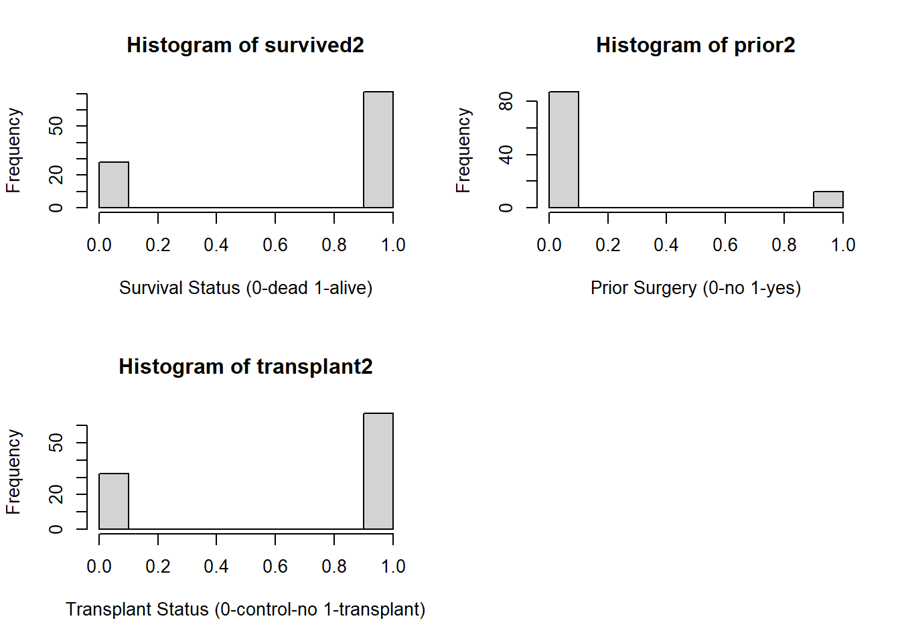

The Cox Proportional Hazard Model (PHM) is best suited for this data due to the fact that this model is used to examine a time-to-event outcome, t, as a function of more than one predictor variable \(x_i\) . What makes Cox PHM unique compared to other models is the fact that it adjusts for censoring. Censoring occurs when the exact time of exposure before an event is unknown. The three main reasons for censoring are: (1) a person does not experience the event before the end of the experiment; (2) a person does not check-in during study; or (3) a person withdraws from the experiment for reasons other than the event of interest (e.g. death in most survival analysis) [1]. A strength of the Cox PHM allows the inclusion of patients who have not had the event. Information is still provided by the patient up to the time of censoring, which informs the overall time to events in the population.
The Cox regression model is based on the hazard function. Mathematically written as :
Where i= 1,2,…, n indexes patients, t represents time, \(h_i(t)\) is the hazard function for person i at time period t, h_0 is the baseline hazard, \(X_{i1}\) , \(X_{i2}\) , … \(X_{in}\) is a set of independent variables (predictor variables) for person i and \(𝛽_0\) are the regression coefficients for the independent variables [2]. Said another way, with the use of th analysis this paper focuses on as example, the hazard of death for being accepted as a heart transplant candidate is equal to the “normal” hazard of death multiplied by an exponential. That exponential is a linear combination of the predictor variables. The Cox PH model then fits the regression coefficients \(\beta\)s in accordance with the data.
Linear regression model on the other hand is not a good fit for this type of data for the following reasons. Survival analysis has two unique characteristics that linear regression doesn’t handle well, censoring and time to event outcomes. Censored data is assumed to be all completed under linear regression and that is not the case in survival analysis. Secondly, linear regression assumes a constant relationship between predictors and response variables. Survival data can exhibit hazard rates, which linear regression can not handle too well.
The other survival analysis model that is often used is the Kaplan-Meier (KM) Survival Analysis. K-M survival analysis is best used to measure the fraction of subjects living for a certain amount of time after treatment [3]. Censored observations don’t hinder the K-M analysis similarly to Cox PMH. The one thing that Cox PMH can do that K-M analysis cannot is performing multivariate analysis by assessing the simultaneous effects of multiple predictor variables on survival outcomes (such as what we are doing with our data), because of this K-M analysis is considered univariate analysis [4].
Dividing both sides by the baseline hazard yields the hazard ratio.
Taking the natural log yields a formula that has some similarity to linear regression. The log of the hazard ratio has a linear relationship to the predictor variables.
Data [5] for our cox regression analysis comes from the Stanford University Heart Transplant Study. The study was conducted to determine if an experimental heart transplant program may increase the lifespan of the recipient. Each patient in the program is considered an official heart transplant candidate, meaning they have an illness that will most likely need a heart transplant in order to prolong their lives. Patients heart transplant occurs between a few weeks to several months which all depends on donor heart availability. Although few candidates during the waiting period show improvement and get deselected as heart transplant candidates, they are kept in the data as continuing candidates [5]. These continuing candidates contribute to the censoring data.
The variables included in the Cox model as the x variable (or predictors) are accepted year, age, prior, and transplant. Accepted year was the year the patient was accepted as a heart transplant candidate and in the data these values are stored under “acceptyear”. Their age when accepted in the study is labeled “age”. Third predictor is whether or not the patient had prior surgeries with the header “prior”. Finally, transplant status, if the patient received the heart transplant or not, stored under the column name “transplant”. The criteria (y variable) are survival status “survived” weather they survived until the end of the experiment, and the number of days a patient lived for after receiving the transplant, labeled “survtime”.
Variables within the data set such as: survived, prior, and transplant needed to be converted from characteristic columns to numeric columns.
Show the code for data conversion
heart_transplant <-read.csv("./heart_transplant.csv")#generate numeric columns for survived, prior, and transplant from existing charachter columnsheart_transplant$survived2 <-as.numeric(ifelse(heart_transplant$survived=="dead",1,0))heart_transplant$prior2 <-as.numeric(ifelse(heart_transplant$prior=="yes",1,0))heart_transplant$transplant2 <-as.numeric(ifelse(heart_transplant$transplant=="treatment",1,0))attach(heart_transplant)
Show the code for the histograms
#examine variables morepar(mfrow=c(2,2))hist(age, xlab="Age (years)")hist(acceptyear, xlab="Year 19XX")hist(survtime, xlab="Survivial time (days)")hist(wait, xlab="Waittime for transplant (days)")
Show the code for the histograms
hist(survived2, xlab="Survival Status (0-dead 1-alive)")hist(prior2, xlab="Prior Surgery (0-no 1-yes)")hist(transplant2, xlab="Transplant Status (0-control-no 1-transplant)")par(mfrow=c(1,1))

Model generation
The first model was generated without the variable wait time due to the fact that only patients who received the transplant (n=67) had a wait time and those patients in the control do not. In order to include more patients (n=99) into the model, wait time was not chosen as a predictor variable in this first model.
Show the code for the first model
#generate model without wait time#wait time is only available for those who received transplant not the control groupall.mod <-coxph(Surv(survtime, survived2)~ acceptyear + age + prior2 + transplant2)
A second model was generated that examined those who do receive the transplant, to determine if wait (waiting time for transplant) was a significant indicator of patients survival status.
Show the code for the second model
#generate model with wait time to see if wait time is significant for those who do receive the transplant, only looks at records that received the transplant not the control who did not receive transplanttreated.mod <-coxph(Surv(survtime, survived2)~ acceptyear + age + prior2 + wait)
A third model was generated, in similar fashion to the first but this model did not include the variable of accepted year. Models with and without the variable for accepted year were compared based on their log likelihood. A high p value (p>0.05) here would indicate there is not a statistically significant difference between the two models. Thus the variable acceptedyear could be dropped from the model without significantly affecting it.
Show the code for the third model and anova test
#generate model without accepted year to compare and determine if removing the accepted year variable has any significant affect on the modelall2.mod <-coxph(Surv(survtime, survived2)~ age + prior2 + transplant2)anova(all.mod, all2.mod, test="LRT")
Check Model Assumptions
The cox proportional hazards model assumptions of linearity and proportional hazards were tested to ensure the data met those assumptions. The linearity assumption is assessed, similarly to how it is assessed in other models, with a plot of the residuals. Here the Martingale residuals were used. The relationship between the x variables and the log hazard should be linear. The Schoenfield test is used to check the proportional hazards assumption. The null hypothesis is the hazards are proportional. A high p value (>0.05) here and we fail to reject the null hypothesis. The Schoenfield test results can also be plotted. Such plots show, if the hazard ratio were to change over time (is not proportional) what would its change look like. To confirm hazards are proportional using a plot of the Schoenfield test, one wants to see that Beta=0 falls within the confidence interval the majority if not all the time.
Show the code for the test for linearity
plot(predict(all2.mod), residuals(all2.mod, type="martingale"), xlab ="Predicted Values", ylab ="Martingale Residuals", main ="All2 Residual Plot",las=1)lines(smooth.spline(predict(all2.mod), residuals(all2.mod, type ="martingale")),col="red")
Show the code for the test for proportional hazards
A fourth model was generated. This one stratified the transplant status. When data does not meet the proportional hazards assumption one method for addressing that is stratification of the variable. This effectively categorizes the variable and creates separate models for each category rather than a single model. In this case two models, one for each status of the transplant variable (0-control-did not receive transplant and 1-treatment-did receive transplant).
Show the code for the fourth model
#Generate and examine transplant stratified models.all_strTrtmnt.mod <-coxph(Surv(survtime, survived2)~ age + prior2 +strata(transplant2))
Lastly, the data was categorized by patient age, into under 40, 40-50, and 50+, a histogram was generated to examine the distribution. A fifth model was generated based on age as a category rather than a continuous value.
#generate model with chategorized ageall_agechat.mod <-coxph(Surv(survtime, survived2)~ age2 + prior2 +strata(transplant2))
Below is a table recapping which variables were included in which model. Each model was generated to address an issue with the previous model until the final 5th model.
Variable
Model 1
Model 2
Model 3
Model 4
Model 5
n=99
n=67
n=99
n=99
n=99
Accepted Year
X
X
Age
X
X
X
X
Categorized
Prior Surgery
X
X
X
X
X
Transplant
X
X
X
Stratified
Stratified
Wait time
X
Estimate Survival Curve
The advantage of the Cox PHM is that we do not need to know the baseline hazard \(h_0(t)\). But, not knowing the baseline hazard means we can not say the hazard for the studied group. We can not know \(h(t)\) if we do not know \(h_0(t)\)\[
h(t) = h_0(t) exp (\beta_1X_{1} + \beta_{2}X_{2} + \dots + \beta_n X_{n})
\] Without the baseline hazard \(h_0(t)\) and the hazard of the studied group \(h(t)\), the above can not be plotted in a plot know as a survival curve. However using mean values of the predictor variables a survival curve can be estimated.